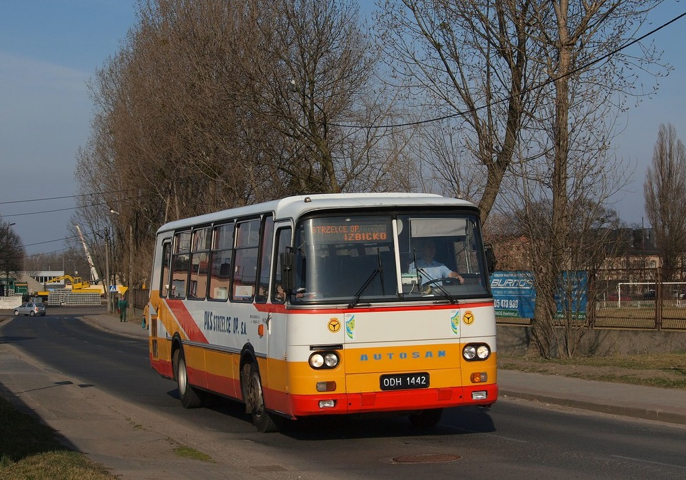

Polskie Autobusy Retro
Menu
•SAN
•JELCZ
•AUTOSAN
AUTOSAN

Autosan – polskie przedsiębiorstwo z siedzibą w Sanoku i marka autobusów, produkowanych niegdyś w Sanockiej Fabryce Autobusów „Autosan”, a następnie przez Autosan Sp. z o.o. Od 2022 oddział Huty Stalowa Wola.
Strona stworzona przez Mikołaj Kozak 3F